Discovery Projects · Systems · Project 7
The Arm and the Claw
Twelve steps, and then your robot can pick things up.
Student PIN:
Tap any photo to see it full size.
Try It Look Before You Build
This is what you are making. Look at it properly before you pick up a single bolt.
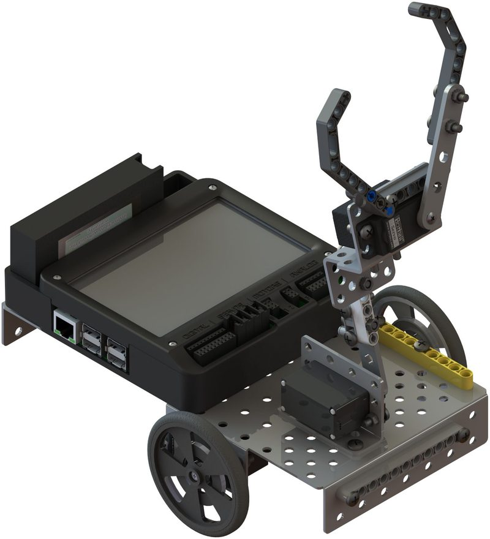
What you are building
| Question | My answer |
|---|---|
| How many joints can move? | |
| How many servos can you count? | |
| Which part goes up and down? | |
| Which part opens and shuts? |
Your robot can already push things. What will it be able to do after this that it cannot do now?
Two Servos, Two Different Jobs
One servo lifts the whole arm. The other opens and closes the claw. Neither can do the other's job.
In Systems Project 6 you decided a blade's shape from its function. Same rule here — the arm is shaped the way it is because of what it has to reach and hold.
Sort your parts first
Lay everything out and count it before you start. A missing nut found at step 9 costs far more than one found now.
Your parts list is at the top of this page — tick each item off as you find it, and sort out anything missing now.
Learn It Three Things That Will Trip You Up
Most of this build is bolting things together. Three details are not obvious, and all three assemble perfectly and then fail later.
1. Which way round the servo goes
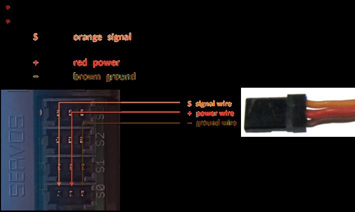
A servo has a wire coming out of one end and a spline — the toothed shaft that actually turns — on the top.
The build tells you wire end first and spline towards the front. Fit it backwards and it bolts up fine, but your arm will swing the wrong way and the wire will be trapped where you cannot reach it.
2. Where the horn starts
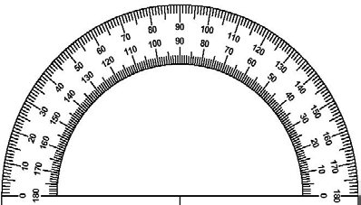
The servo horn is the arm that clips onto the spline. Here is the part people skip.
A servo does not turn forever. It has a start and an end, maybe half a circle apart. Whichever way the horn is pointing when you push it on is where that range begins.
⚠ Step 3 Is a Setup Step, Not an Assembly Step
You will rotate the horn to the very end of its travel, take it off, put it back a notch further, and repeat — until it will not go any further. Only then do you bolt it down, facing as far down as it will go.
Get this wrong and everything still fits. Then in Coding Project 7 your arm runs out of movement halfway through a lift, and nothing in your program will fix it.
3. The washer goes underneath

Twice in this build a claw part mounts onto a servo with a washer beneath it, held by the small silver bolt that came with the horn.
The washer spreads the load so the plastic does not get chewed up. Leave it out and the joint works loose after a few dozen grabs.
Build It Once, Properly
Every step here has a photo. Match your robot to the photo before you move on, and if it does not look the same, it is not the same.
Do It Twelve Steps
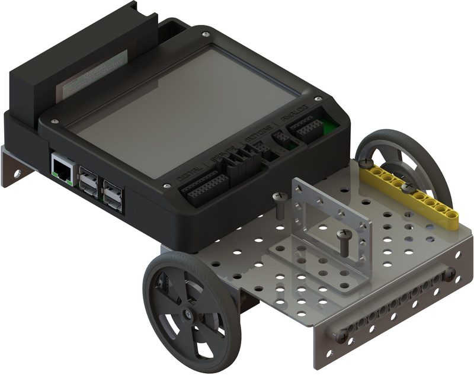
- Line up a servo bracket on the short end of the chassis as shown.
- Attach the bracket to the chassis with two medium bolts and two nuts.
Parts servo bracket · 2 medium bolts · 2 nuts
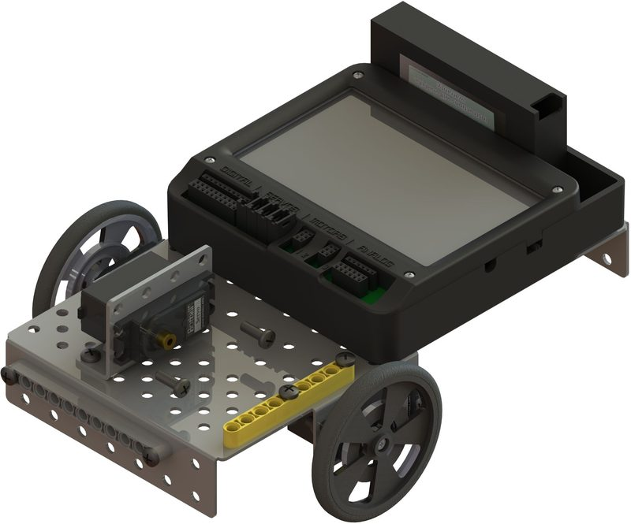
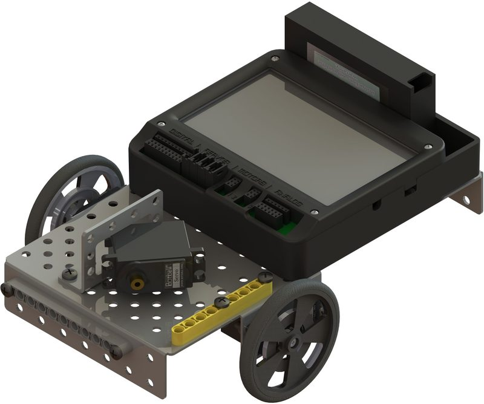
- Slide a servo into the servo bracket, wire end first, with the spline towards the front of the robot.
- Secure it to the servo bracket with two medium bolts and two nuts.
Parts servo · 2 medium bolts · 2 nuts
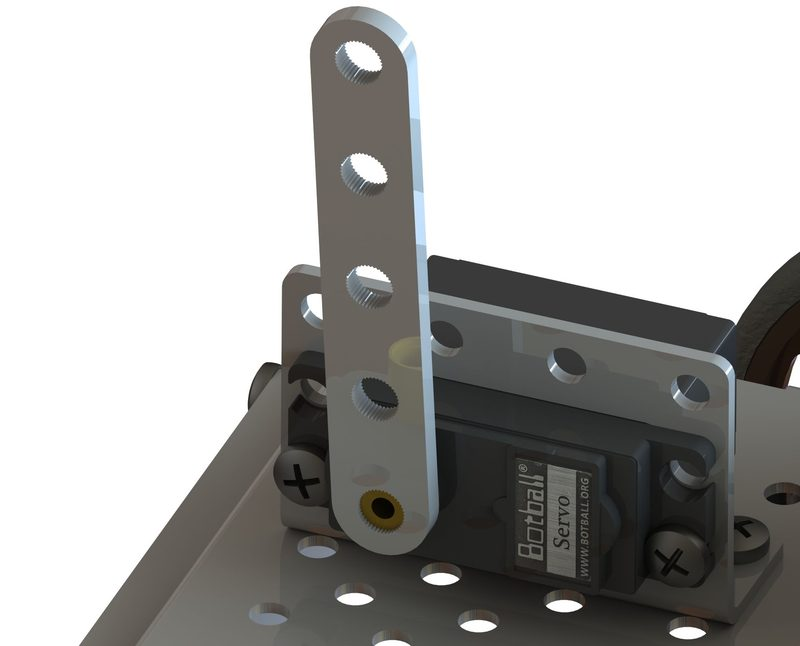
- Place the 1×5 servo horn on the robot as shown.
- Rotate the servo head with the horn all the way away from the robot.
- Repeat until the servo can turn no further, then seat the horn so that it faces as far down as it will go.
Parts 1×5 servo horn
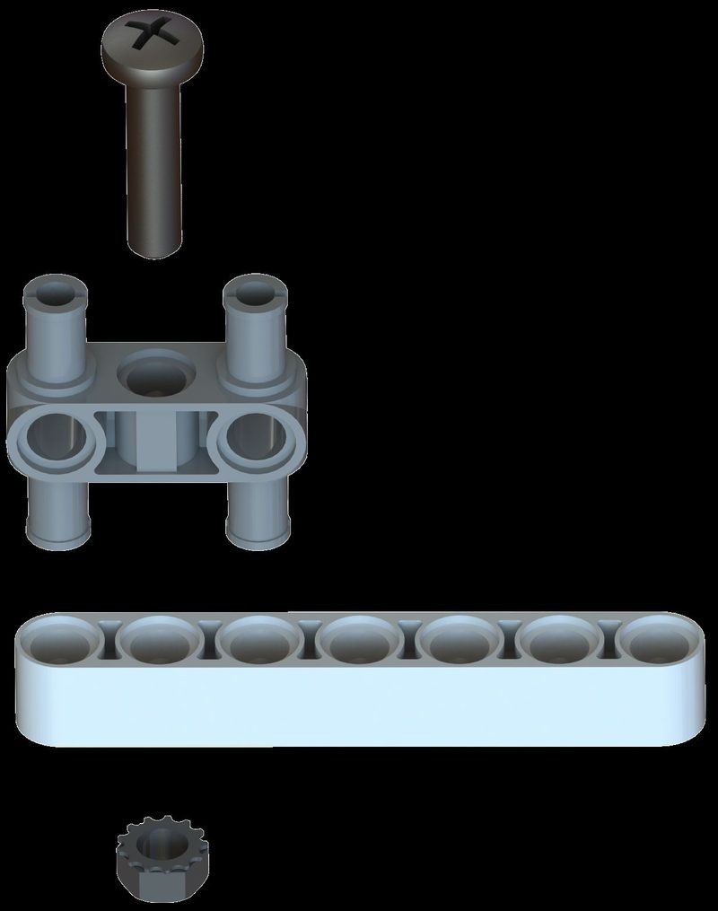
- On one end of a 1×7 liftarm, attach a LEGO H‑pin.
- Secure it in place using a long bolt and nut.
Parts 1×7 liftarm · LEGO H‑pin · 1 long bolt · 1 nut
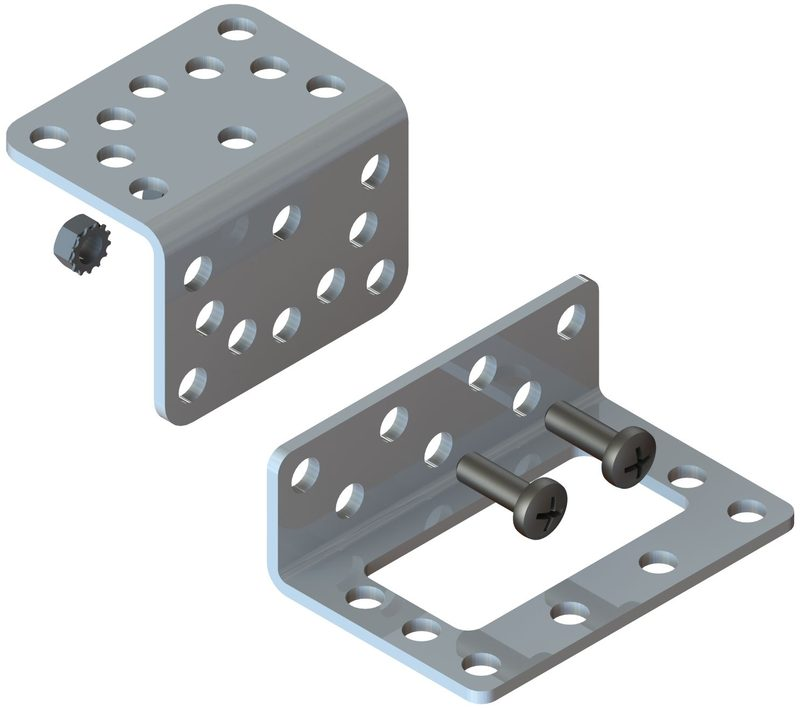
Attach an L bracket to a servo bracket using a medium bolt and nut as shown.
Parts L bracket · servo bracket · 1 medium bolt · 1 nut
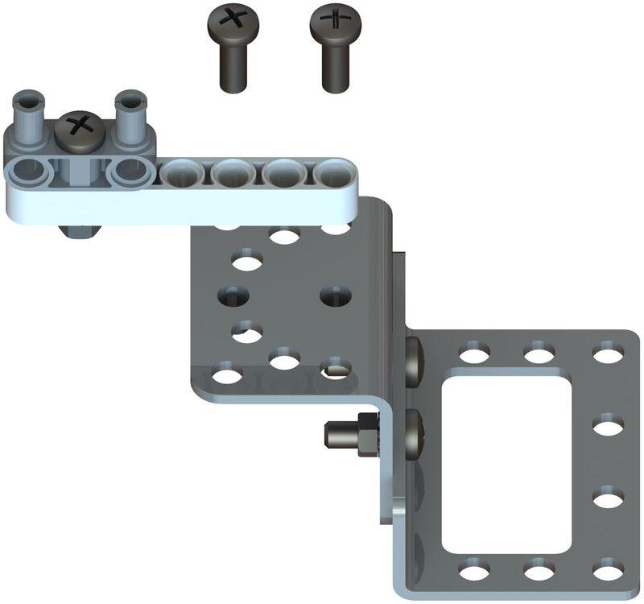
Attach the LEGO assembly from step 4 to the top of the L bracket using two medium bolts and nuts.
Parts 2 medium bolts · 2 nuts
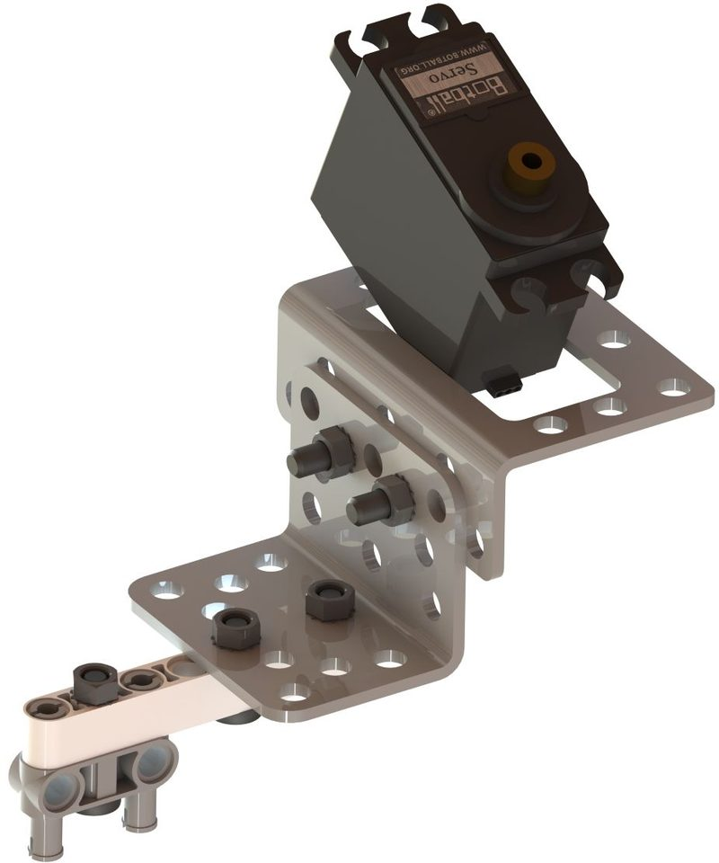
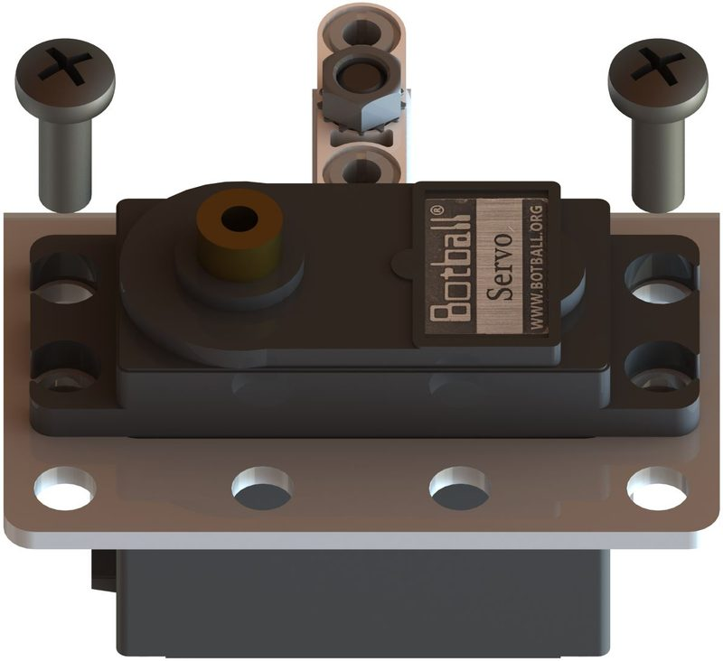
- Flip the assembly over and place a servo in the servo bracket wire first.
- Secure it in place using a medium bolt and nut.
Parts servo · 1 medium bolt · 1 nut
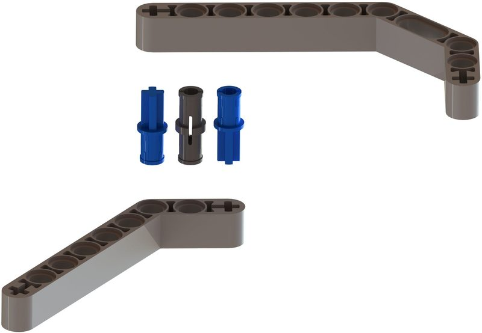
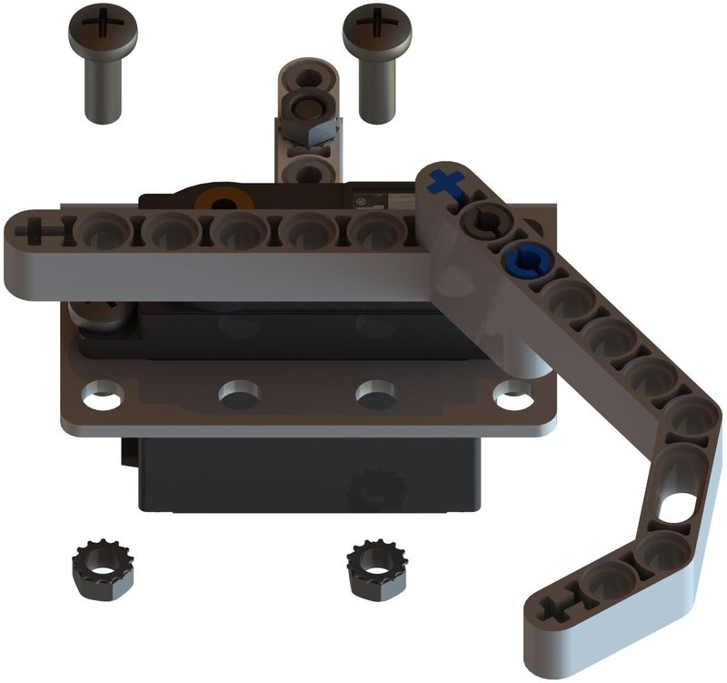
- Attach a 3×7 bent liftarm, short end first, to the long end of a claw liftarm using two blue axle pins and one black pin.
- Flip the assembly back over and secure it to the servo bracket using two long bolts and nuts as shown.
Parts 3×7 bent liftarm · claw liftarm · 2 blue axle pins · 1 black pin · 2 long bolts · 2 nuts
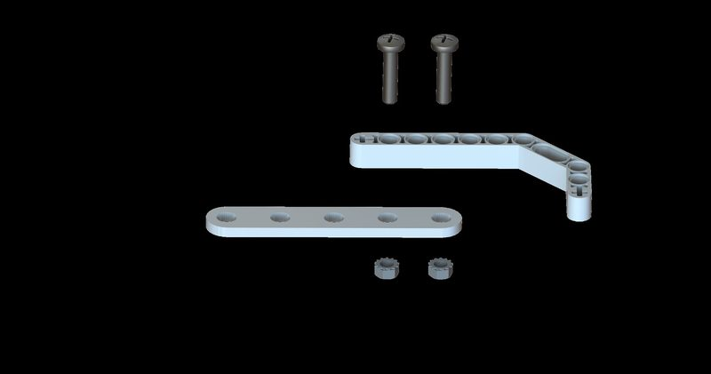
Attach a claw liftarm to a 1×5 servo horn using two long bolts and nuts.
Parts claw liftarm · 1×5 servo horn · 2 long bolts · 2 nuts
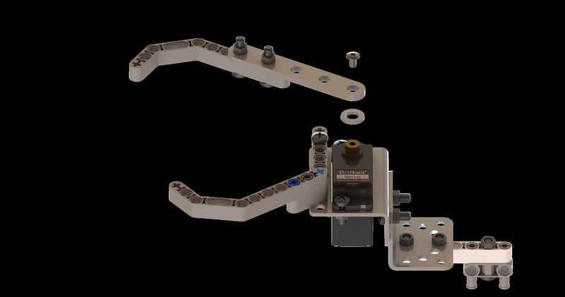
Attach the claw to the servo with a washer beneath it and the small silver bolt that came with the 1×5 servo horn.
Parts 1 washer · small silver bolt
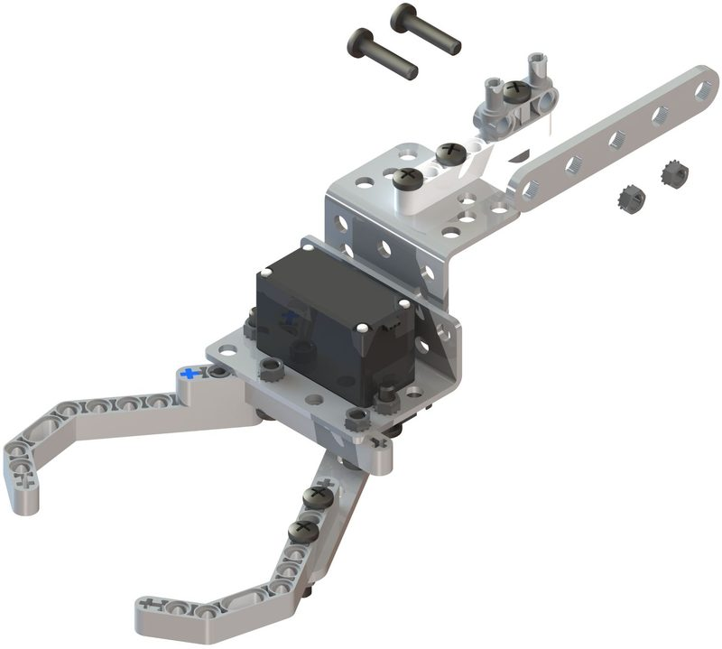
Attach a 1×5 servo horn to the LEGO H‑pin using two long bolts and nuts, so that two of the middle holes on the servo horn line up with the holes on the pin.
Parts 1×5 servo horn · 2 long bolts · 2 nuts
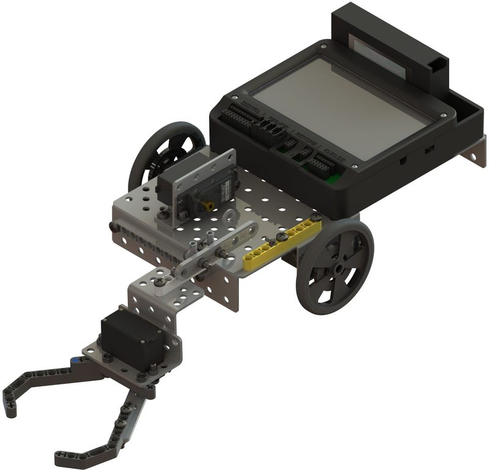
Attach the claw assembly to the servo on the robot: washer on first, then the claw assembly, then secure it with a small silver bolt from the 1×5 servo horns and washers.
Parts 1 washer · small silver bolt
Servo Demobot Finished
Now test it by hand
Do not plug anything in yet. Move the arm and the claw with your fingers.
| Check | What happened |
|---|---|
| Does the arm swing up and down freely? | |
| Does the claw open and close? | |
| Does anything catch or rub? | |
| Are both servo wires free, not trapped? | |
| Does the robot still fit in the starting box? |
⚠ Do Not Force a Servo By Hand
Turning a servo hard against its stop can strip the gears inside. Move things gently, and if something will not go, find out why instead of pushing harder.
Can the claw reach the floor? Can it reach high enough to place a cube ON TOP OF another one?
Put a cube between the claw fingers and close it by hand. Does it hold?
If the Arm Runs Out of Movement
Go back to step 3. Take the horn off, rotate the servo to its stop again, and re-seat the horn one notch at a time until the arm covers the whole range you need.
It is a five-minute fix now. It is an unsolvable programming problem later.
Score It Checkpoint
Which part is which?
| The part that… | Is called |
|---|---|
| Is the toothed shaft the servo actually turns | |
| Clips onto that shaft and carries the arm | |
| Spreads the load under a bolt so plastic is not chewed | |
| Lets the claw joint pivot instead of locking solid |
What goes wrong if…
| You… | The result is |
|---|---|
| Fit the servo wire end last | |
| Skip the rotating in step 3 | |
| Leave out the washer | |
| Use a blue pin where the black one goes |
My robot
| Measurement | Value |
|---|---|
| How far the claw reaches in front of the wheels | |
| Highest the claw will go off the floor | |
| Widest the claw opens | |
| Robot width with the arm fitted |
Write these in your notebook too. You will need them in Coding Project 8.
Can you do it again?
Think about it
Step 3 takes longer than any other step and adds no parts to the robot. Why is it in the build at all?
Fitting a servo backwards still bolts up perfectly. What does that tell you about checking your work against the photo rather than against whether it fits?
Your blade from Project 6 could push. This claw can lift and hold. Is there anything the blade does better?
Next
Your robot has an arm and a claw and no idea how to use them.
Coding Project 7 — Your Robot's Arm is now unlocked, and so is everything after it. Between them, the arm and claw missions are worth more than half the points on the field.
KIPR · Botball Explorer — Discovery Projects · Build photos from the 2025 KIPR Servo Demobot Build · © KISS Institute for Practical Robotics 1997–2026